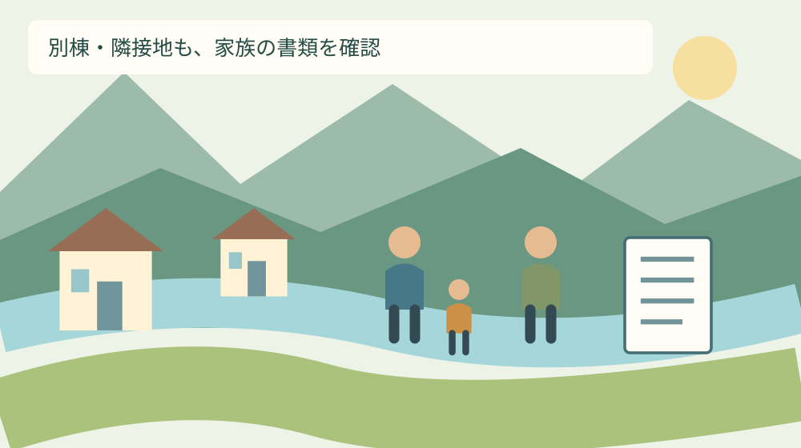
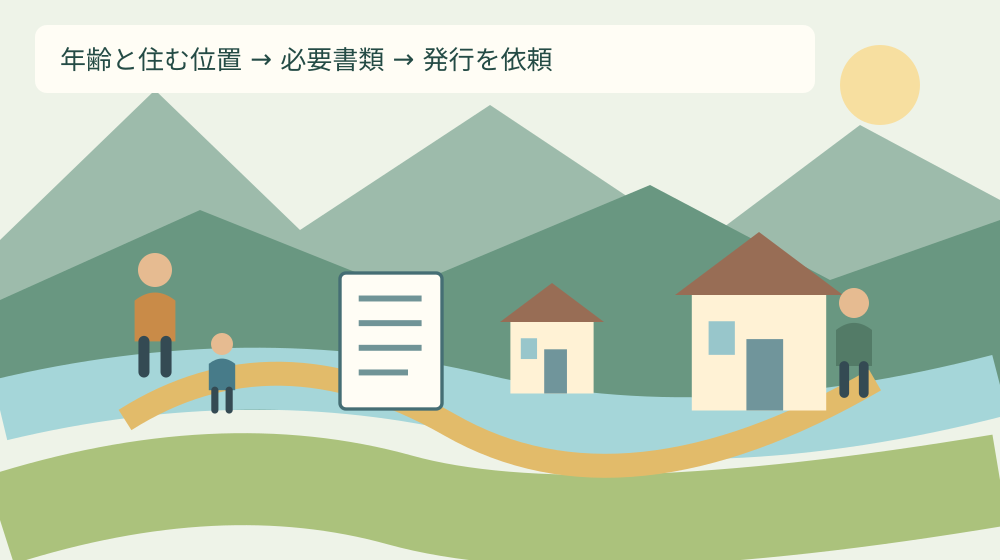

手続き・制度
森町の児童クラブ申請｜同居家族の証明書
Q. 祖父母と同居・近居していると、児童クラブの証明書は誰の分が必要？
A. 森町の2027年度放課後児童クラブは、父母と65歳未満の同居親族全員分の、養育を必要とする証明書が必要です。同居には二世帯住宅、同一敷地の別棟、隣接地も含みます。就労証明書は3か月以内の証明が条件。一斉申込みは2026年9月14日～10月16日です。今日は親族の年齢と住む位置を書き出してください。
送迎と養育の負担に、書類の手戻りを重ねない
朝の支度を進め、仕事を終える時刻から迎えの移動を逆算する。祖父母へ頼む日には、その人の予定も確かめる。森町で子どもの放課後を支える家庭は、日々こうした段取りを引き受けています。申込みの書類まで、一人の保護者へ全部集めたくありません。
2027年度の放課後児童クラブを申し込む際、確認したいのは「誰の証明書が要るか」です。父母の勤務先へ依頼するだけで済むと考えていると、同居親族の書類を後から用意することになり得ます。先に家族の範囲を整理するのが、この記事の目的です。
私は大石浩之（磐田市／不動産業）です。不動産の仕事に関わる立場から、家が別棟であることと、制度上の同居の扱いは分けて確かめたいと考えます。ここで示す一覧や確認手順は私の提案で、窓口で実際に対応した家族の体験談ではありません。
転入時期と学校生活を合わせて考える場合は、子連れ移住の入り時期を逆算する記事が別の判断材料になります。今回は転居の季節を選ぶ話から一歩絞り、申込書類の対象となる人を確認します。住む場所が決まっていない欄は未定と残します。
事実整理｜父母と65歳未満の同居親族を確認
森町「令和9年度放課後児童クラブの利用申込みについて」は、父母と65歳未満の同居親族全員分の、養育を必要とする証明書を案内しています。ここでいう同居には、二世帯住宅、同一敷地内の別棟、隣接地での居住も含まれます。2026年9月21日に本文を確認しました。
一斉申込期間は2026年9月14日から10月16日までです。利用する年度は2027年度ですが、申し込む年は2026年です。受付時間は平日8時30分～12時、13時～17時とされています。年度の数字と提出日の数字を、家族の予定表でも分けて書いてください。
町は年度途中や学校の長期休業期間だけの利用についても、期間内の申込みを案内しています。継続利用を希望する場合も年度ごとの申込みが必要です。既に利用しているという理由だけで、2027年度分の準備を省略しないようにします。
ここで見落としやすいのは、同じ屋根の下に住む家族だけを数えるとは限らない点です。隣の敷地の祖父母も確認に関わるため、日常会話の「別居です」だけでは条件が伝わり切らないことがあります。住まい方を具体的に伝える準備が役立ちます。

二世帯住宅・別棟・隣接地をどう伝えるか
二世帯住宅や別棟の確認では、家族関係の説明に加えて建物の位置を簡単に描く方法を私は提案します。親世帯の家、子世帯の家、道路、敷地の並びを四角と線で表すだけです。これは町が指定した提出図面ではなく、口頭の質問を助ける手元用のメモです。
「近居」という言葉は距離や位置を一つに定めません。隣接地なのか、道路を挟むのか、離れた場所なのかを言葉で補います。この記事では何メートル以内なら対象といった線を作りません。町の案内に書かれた隣接地と、家族が使う近居の言葉を同一視しないためです。
玄関や台所が別だから提出不要だ、と自己判断するのも避けたいところです。町は二世帯住宅を明示しているため、設備が分かれているという説明だけで対象から外す根拠にはなりません。図に設備を書き込むより、まず家族の年齢と建物の位置を伝えるのが私の提案です。
例えば祖母が別棟に住み仕事をしているなら、別棟であること、年齢、就労の状況をそれぞれ一行にします。これは仮の整理例で、実在の家庭ではありません。書類の要否や利用の決定まで、この例だけで結論を出さず、町の担当へ確認してください。
全員が就労証明書とは限らない
養育を必要とする証明書は、働いている人の証明書だけを意味しません。町の2027年度案内は、就労なら就労証明書、疾病・障がい、介護、看護等なら申立書と理由に応じた添付書類という形で整理しています。家族全員へ同じ様式を渡す前に、理由を分けます。
会社員として働く家族と、自営業の家族では、確認する資料が同一とは限りません。町は自営業等について確定申告の写しや開業届等も挙げています。誰が証明するのか、何を添付するのかを確認してから依頼し、保護者が勤務実態を推測で記入しないようにします。
介護を担う家族なら、その人自身が介護を受けているのか、親族を介護しているのかで説明が変わります。私は単に「介護」と書いて終わらせず、誰が誰の世話をし、養育が難しい時間にどう関係するのかを整理する方法を勧めます。詳しい個人情報は提出先に必要な範囲で伝えます。
病気や就学、求職活動など、就労以外の理由をどう証明するか迷う場合は、町の表と照合して質問します。証明書の種類が分からないまま医療機関や勤務先へ依頼すると、取り直しの手間が生じます。私は、費用のかかる発行を頼む前に必要な書類を確かめたいと考えます。
良い点｜理由ごとに証明の入口が示されている
森町の案内の良い点は、養育が難しい理由を就労だけに限定した説明にせず、理由ごとに資料を示していることです。私は、仕事をしているかだけの問いでは伝わらない家庭の状況を、申立書等の形で伝える入口がある点を評価します。
同居の範囲を二世帯住宅や別棟、隣接地まで書いている点も、確認材料になります。私は住まいの呼び方だけで判断が分かれないよう、具体的な形を示している点を良いと考えます。家族が早めに読めれば、勤務先への依頼を追加する前に対象者を整理できます。
通常の通年利用と、長期休業期間だけの利用を分けている点も準備に役立ちます。私は利用希望が異なるのに同じ書類一式だと思い込まないための区切りと受け止めます。どちらを申し込むかを先に家族でそろえると、必要な欄や添付を照合しやすくなります。
こうした書面の整理は、窓口だけの都合ではないと私は考えます。保護者が昼休みの電話や移動を繰り返さずに済むことも、家族の実利です。日頃から送迎を担っている人の時間を認め、その時間を使って集めた資料が一度で伝わる準備をしたいところです。
注文したい点｜年齢と敷地の境目は自己判断しない
森町への確認が必要な境目は、年齢の基準日と個々の居住関係です。私は「65歳未満」の文字だけを見て、いつの年齢かを独自に決めないようにしたいと考えます。申込時と利用開始時の間に65歳になる人は、生年月日を手元に置いて質問します。
年齢に関する確認では、近隣自治体の説明を森町の条件として移さないよう注意します。自治体が違えば、書類の書き方や運用も同じとは限りません。町の担当へ「何日時点で判断しますか」と尋ね、回答日と確認した条件をメモに残す方法を私は勧めます。
親族が学生である場合や、不在期間がある場合なども、一律の答えをこの記事で作りません。町の「全員分」という案内を確認した上で、家族の状況に応じて何を出すかを照会します。分かりにくい欄を理由に対象者そのものを一覧から消さないようにします。
私が注文したいのは、保護者が家族の事情を何度も説明しなくて済む案内です。質問する側も、同じ敷地か、別棟か、年齢は何歳かをまとめれば話を絞れます。今日は対象か迷う一人に印を付け、どの条件を聞くかを書くだけでも手戻りを減らす準備になります。

対案・結論｜今日は同居親族の年齢を書き出す
今日できる一歩は、同居親族の年齢を書き出すことです。父母を別に記し、その下に一緒に暮らす親族と、別棟・隣接地の親族を並べます。最初の一覧は提出書類ではありません。誰の確認が抜けているかを見るための、家族の手元の記録です。
一人につき「続柄・年齢・住む位置・養育が難しい理由・書類の確認先」の五つを並べるのが私の提案です。分からない理由を勝手に決めず、本人に聞く欄として残します。家族だから全部知っているはず、と考えずに本人が説明する余地を作ります。
五つの欄をそろえたら、書類が必要と読める人と、町へ要確認の人を分けます。確認の連絡先は健康こども課幼稚園保育園係、0538-86-6300です。町の掲載住所は森町森50番地の1。問い合わせでは2027年度の児童クラブの件だと最初に伝えます。
問い合わせの文は、「隣接地の別棟に住む親族がいて、申込時と利用開始時で年齢が変わります。証明書の対象と、年齢の基準日を確認したい」といった形にできます。これは筆者が作った質問例です。実際の状況に合う部分だけを使ってください。
窓口から回答を受けたら、誰がどの書類を用意するかを家族と確かめます。電話した人が全員の発行依頼まで抱え込む必要はないと私は考えます。勤務先へ頼む人、回収を確認する人、提出する人を分け、引き受けられる範囲を先に聞いておきます。
証明書の発行と提出を別の予定にする
就労証明書は、町の案内で3か月以内に証明を受けたものとされています。私は発行依頼日、証明日、受取日、提出予定日を別々に記録する方法を勧めます。依頼した時点ではまだ証明が済んでいない場合があり、書類の完成と提出の予定は同じではありません。
勤務先の発行に何日かかるかは、各勤務先へ確認します。この記事で一律に3日や一週間とは決められません。提出期限から逆算する際は、家族が書類を受け取る日と、記入漏れを確かめる日を分けておくと、訂正が必要な場合の連絡先を残せます。
受け取った証明書は、氏名、証明日、該当する勤務欄に不明な点がないかを確認します。勤務先の証明内容を保護者が独断で書き換えるのではなく、疑問は発行元へ返します。訂正方法や、提出先が求める扱いを確かめるための時間も予定に入れたいところです。
2026年10月16日の期限に間に合わない書類が見えてきたら、その事実を町へ早めに伝えます。不足したまま出せば受理される、後日出せばよい、とこの記事では約束できません。何がいつ届く見込みなのかを伝え、認められる対応を期限前に確認してください。
家族に残す記録は、一人一行の進行表にする
家族の進行表は、書類の内容そのものを全員へ共有するものではありません。私は「依頼済み・受取待ち・確認済み・提出済み」の状態を一人一行で管理する方法を提案します。病状や勤務先の詳しい情報は、必要な人だけが扱うよう分けます。
提出する原本と家族が控えとして保管する写しは、置き場所を分けて記録します。学校や別の制度に出す資料と同じ封筒へ混ぜると、誰の何年度の書類か分かりにくくなります。封筒には2027年度児童クラブと書き、手元の確認表には提出した日を残します。
保育園に通うきょうだいがいる家庭は、保育所の書類と児童クラブの書類を別に照合します。森町の保育料が9月に変わる理由も別制度の説明です。似た名前の証明書でも、そのまま兼用できるとは考えず、提出先ごとに必要枚数を確認します。
住所や勤務状況が申込み後に変わる場合は、その変更を放置しないよう記録に予定を置きます。町は住所、氏名、利用区分等の変更届を案内しています。転居予定があるなら、決まった日と確認すべき窓口を書いておき、当初の資料との差を説明できるようにします。
大石の視点｜近くに家族がいることと、頼めること
私は、書類集めを一人の親へ丸投げせず、誰の何が必要かを先に決めるべきだと考えます。制度を知っている人が家族全員の事情を聞き、勤務先へ連絡し、役場へ走る。それでは送迎と養育を担う人へ、見えない作業まで重ねてしまいます。
住まいを考える立場としても、「祖父母が近くにいるから安心」とだけ言って終わりにはできません。家が近いことと、毎日の養育を引き受けられることは別です。仕事や介護、本人の体調を確かめないまま、住まいの配置を手伝いの約束として数えたくありません。
私には、家族の年齢や事情を細かく並べることが、祖父母に負担を頼むための表に変わらないかという迷いがあります。だから一覧の目的は申込みの確認に限定します。誰が子どもを見るべきかを家族内で決めつける材料には使わない、という線を引きたいと思います。
森町で住まいを選ぶ余地があっても、通学や迎えの移動、養育の担い手が無理を重ねる形では続きません。今日は年齢を書き出すだけにして、支援を頼む相談は別の時間を取りましょう。申込書類の整理と、家族の同意を得る話を分けるのが私の判断です。
申込後の暮らしも、仮の予定で確認する
申込みの準備と利用決定は同じではありません。町は申込者の状況によって利用を待つ場合があると案内しています。私は家族の予定表を、決定前は仮の予定として作り、書類を出した日に預かり先が確定した扱いにしない方法を勧めます。
森町の「子育て支援」ページには、会員同士で助け合うファミリー・サポート・センターの案内もあります。送迎等の相談ができる仕組みですが、希望どおりの相手や時間をこの記事で保証するものではありません。児童クラブの不足分を自動的に埋めるものとして予定しないでください。
困った日の相談先を考える際は、子育て移住を相談先から比べる記事も参考になります。私は日常の迎えと、病気や残業など予定が変わる日の対応を別にメモしたいと思います。家族が既に担っている時間を先に確かめてから、追加の相談先を探します。
2027年度の申込みに向けた今日の成果は、全部の書類を集め終えることではありません。父母と同居親族を並べ、年齢と住む位置を一つずつ確認することです。対象が曖昧な人は町へ尋ね、理由に合った証明を依頼する。順番を守ることが、家庭と窓口双方の手間を減らす準備になります。
よくある質問
手続きを進める前に確認したい条件を、質問ごとに整理します。
隣の敷地に住む祖父母も証明書が必要ですか？
森町の2027年度案内は、同居に二世帯住宅、同一敷地内の別棟、隣接地での居住を含めています。父母に加え、65歳未満の同居親族全員分の証明書が必要です。「近くに住む」だけで一律に決めず、祖父母の年齢と家の位置関係を健康こども課へ伝えて確認してください。65歳の判定日が関わる場合も窓口へ尋ねます。
働いていない同居親族にも就労証明書を頼みますか？
必要なのは養育を必要とする理由を示す証明書で、全員に就労証明書を頼むわけではありません。町は、就労なら就労証明書、疾病・障がいや介護等なら申立書と理由に応じた添付資料を案内しています。働いていない理由や養育が難しい状況を整理し、該当する書類を窓口に確認してから準備してください。
就労証明書と一斉申込みの期限は何ですか？
町の案内では就労証明書は3か月以内に証明を受けたものが必要です。2027年度の一斉申込期間は2026年9月14日～10月16日で、受付は平日8時30分～12時、13時～17時です。発行を依頼した日と証明日は区別し、提出予定日に条件を満たすか確認してください。遅れそうな書類は、期限前に町へ扱いを相談します。

公式情報源
2026年9月21日確認。制度・数値は変更される場合があります。個別の適用は担当窓口へ、医療・税務・法律等の専門判断は各専門家へ確認してください。